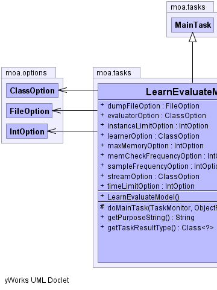
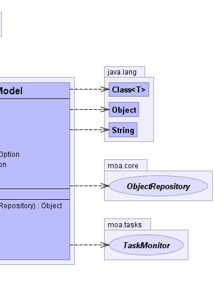

public class LearnEvaluateModel
extends moa.tasks.MainTask
|  |  |
| Modifier and Type | Field and Description |
|---|---|
moa.options.FileOption |
dumpFileOption |
moa.options.ClassOption |
evaluatorOption |
moa.options.IntOption |
instanceLimitOption |
moa.options.ClassOption |
learnerOption |
moa.options.IntOption |
maxMemoryOption |
moa.options.IntOption |
memCheckFrequencyOption |
moa.options.IntOption |
sampleFrequencyOption |
moa.options.ClassOption |
streamOption |
moa.options.IntOption |
timeLimitOption |
| Constructor and Description |
|---|
LearnEvaluateModel() |
| Modifier and Type | Method and Description |
|---|---|
protected java.lang.Object |
doMainTask(moa.tasks.TaskMonitor monitor,
moa.core.ObjectRepository repository) |
java.lang.String |
getPurposeString() |
java.lang.Class<?> |
getTaskResultType() |
doTask, doTask, getDescription, getTaskName, prepareForUseImplcopy, discoverOptionsViaReflection, getCLICreationString, getOptions, getPreparedClassOption, prepareClassOptions, prepareForUse, prepareForUsepublic moa.options.ClassOption learnerOption
public moa.options.ClassOption streamOption
public moa.options.ClassOption evaluatorOption
public moa.options.IntOption instanceLimitOption
public moa.options.IntOption timeLimitOption
public moa.options.IntOption sampleFrequencyOption
public moa.options.IntOption maxMemoryOption
public moa.options.IntOption memCheckFrequencyOption
public moa.options.FileOption dumpFileOption
public java.lang.String getPurposeString()
getPurposeString in interface moa.options.OptionHandlergetPurposeString in class moa.options.AbstractOptionHandlerpublic java.lang.Class<?> getTaskResultType()
protected java.lang.Object doMainTask(moa.tasks.TaskMonitor monitor,
moa.core.ObjectRepository repository)
doMainTask in class moa.tasks.MainTask